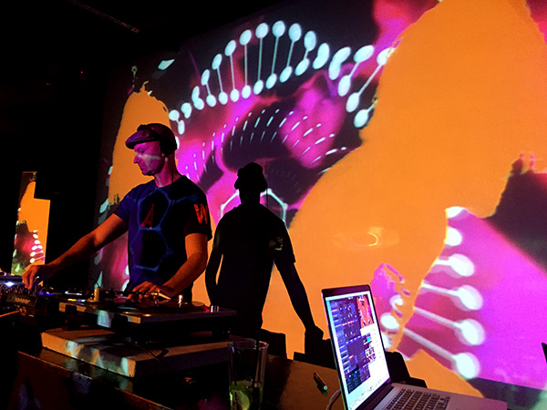

Nuestro acercamiento al VJ
↓↓¡Vea nuestros eventos de VJ!↓↓
El VJ, abrebiatura de "video jockey", refiere a un artista visual que crea y mezcla imágenes en tiempo real para acompañar la música en eventos en vivo. La función principal de un VJ es crear un ambiente visual que complemente y mejore la experiencia de los asistentes al evento. Los VJs pueden utilizar una variedad de medios visuales, como imágenes, vídeos, animaciones, gráficos generativos y efectos visuales en vivo.
Se podría decir que realiza un trabajo similar a los DJs, pero en lugar de usar el sonido, usan imágenes. En cuanto a los eventos en los que suelen trabajar, destacan conciertos, festivales, discotecas y clubes nocturnos, eventos corporativos y eventos deportivos. Configura una práctica muy frecuente entre los artistas multimediales, ya que permite esa articulación de varios medios y técnicas e interactividad, es decir, aporta esa flexibilidad para la práctica multimedial.
Funciones:
↓↓¡Vea nuestros eventos de VJ!↓↓
Referencias bibliográficas: